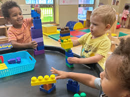

Introduction and Importance
Cognitive curriculum level early childhood engineering aims to solve problems, engineering design and physical and mechanical world. When children are taught the simple principles of engineering, the educator is able to develop among them the important skills of critical thinking, creativity as well as teamwork. Engineering is known to fascinate children to find out how things are made, how they are constructed, how systems are developed and developed. These experiences enable children to gain control and also gain better understanding of cause and effect relationships. Engineering plays the essential role in early education because it inspires children to invent and creatively explore the modern world. In order to address this, as children build, testing, and redesign these projects, they gain persistence and a sense of engineering learning for future of learning in STEM.
Theories and Perspectives
Another theory that we found relevant to engineering education is constructivism which means children are best taught when they are allowed to interact with their environment. In engineering contexts, this translates into creating chances for modelling and activities requiring ones own problem solving, experimenting and prototyping/ brainstorming. The Engineering Design Process (EDP) is a widely-used framework in engineering education that encourages children to follow a series of steps: request, think, design, invent, experiment, refine. The looping is done to approach constructivist theory of learning as well as the Tinkering approach in which the children are allowed to tinker with their ideas so as to come up with a more refined one. The process focuses on the ability to turn problems into challenges and prove that mistake making is a natural and valuable part of the thinking and discovery process for children.
Resources and Tools
In education, building blocks, LEGO kits and Construction toys allow children learn engineering characteristics or principles of engineering for instance structures. Simpler elements are used for making apple presentations, while other more complex structures like simple circuits, gears, and motors are more useful to older children for making more complex builds. Simulation software and various engineering applications give children opportunity to create projects, check them as is, and improve. Teachers can apply robotics kits i.e. LEGO Mindstorms or K ‘NEX took making robots to help the children apply real life engineering problems. These resources let children revise material and practice problem solving and critical thinking skills as well as contribute to teamwork and creative thinking.
Learning Experiences
0-2 Years
Toys that slide, roll, or have a mechanism that transforms them in front of the youngster’s eyes assist in cause and effect learning since youngsters explore using their senses.
2-3 Years



Playing with blocks or any construction toy is a great way to help the toddler develop the abilities in design and structures stability.
3-5 Years
Pulleys or ramps or ropes or inclined planes are brought in for children to apply concepts in simple engineering.
6-8 Years
Construction of these projects like constructing bridge or tower by using different material is one of best activity to develop the creative idea in mind of students as well as applying engineering ideas in learning curve of older children.